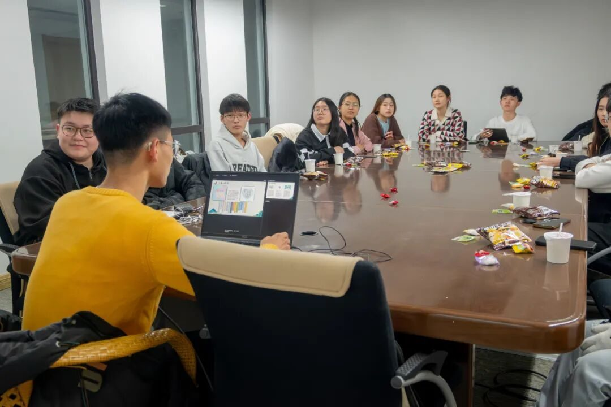
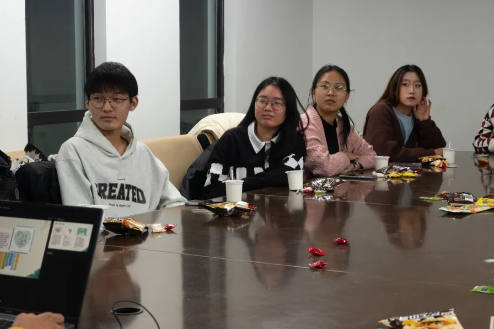
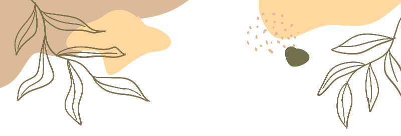
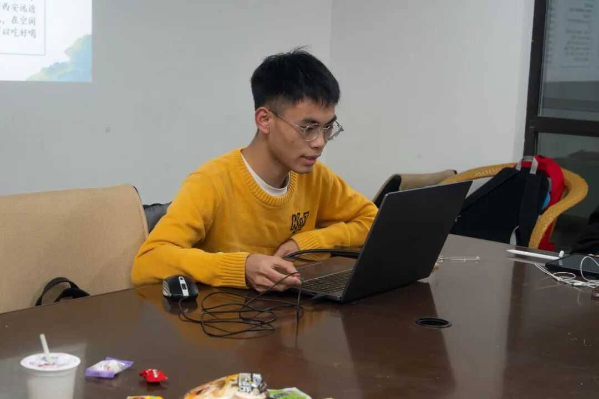
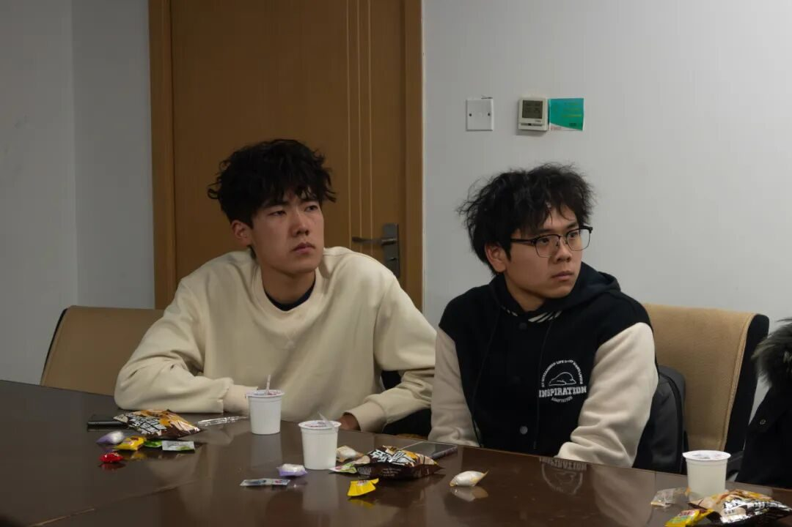
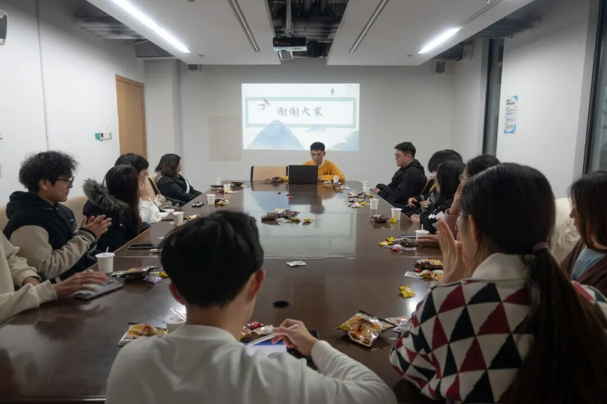
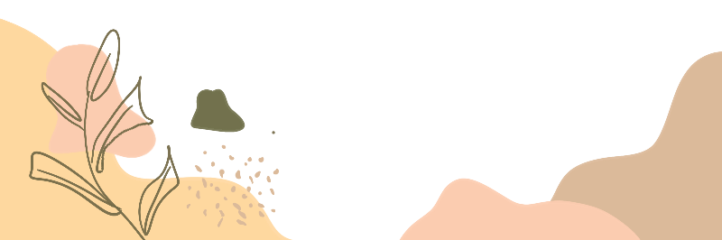

凝心共铸团队魂，破浪启航征远尘
01
心齐可破千层浪，手合能撑一片天

见面会尚未开启之际，队长与副队长为新成员精心筹备了可口的小零食与饮品。新成员们初来乍到，眼神里写满好奇，言行中透着礼貌；老成员们则以满脸的热情相迎，会议室里一片其乐融融。大家一边品尝着美味零食，一边畅快地交谈，就在这般温馨惬意的氛围中，破冰之旅悄然开启，陌生与拘谨渐渐褪去。


02
心向远方之境，行于无疆之路
当见面会正式拉开序幕，队长有条不紊地组织大家展开自我介绍环节。有的同学神情专注、措辞严谨地分享自我，其余同学皆侧耳凝神静听；有的同学则别出心裁，以幽默诙谐的方式与滑稽逗趣的言行引得全场成员笑声不断。


随后，队长声情并茂地讲述起“行者无疆”实践团往昔那长达八年的光辉历程，始终坚守初心、不离不弃的执着信念，令在场成员皆为之动容、深深折服。最后，队长介绍了实践团每日的行程安排，实践团将遍览西安的非遗文化，一睹大唐盛世之光彩。



03
千年古都神韵长，梦回大唐盛世光
十五位意气风发的行者即将踏上全新的征程，携手并肩，立志再创“行者无疆”的灿烂辉煌。这片土地，历史与现代相互交融，这里承载着大唐的荣耀辉煌，延续着千年文化的不朽传承，静候着“行者”们的欣然赴约，一同领略它那深邃广博的迷人风姿与独特魅力。
-END-
来源 | 行者无疆实践团
图片 | 樊星烁
文字 | 刘宇凯
编辑 | 郑瑞瑄
审核 | 李凌志 杩健辉
责编 | 邹靓靓